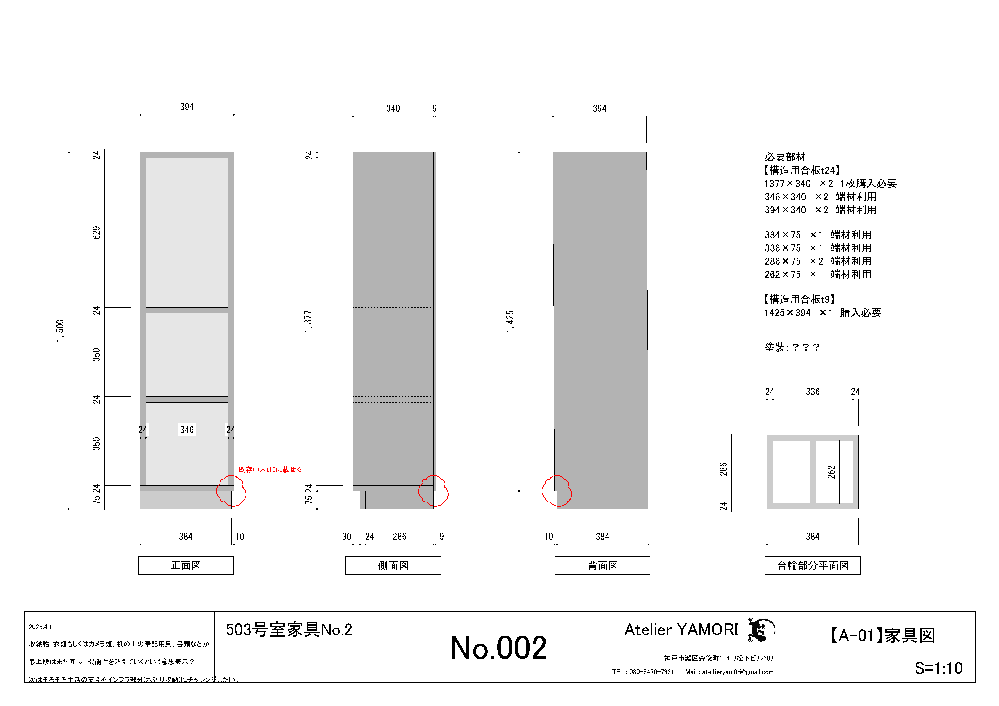
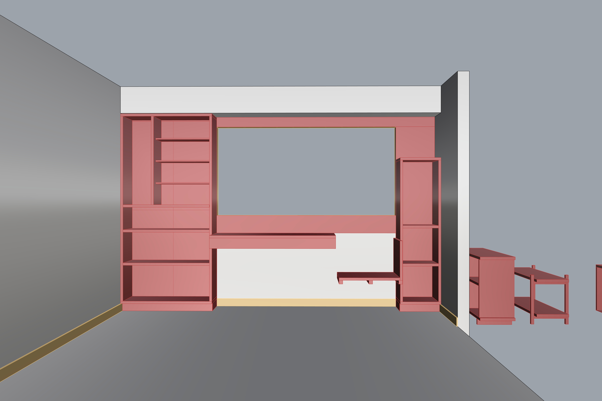

503号室家具No.2 棚
住んでいる503号室の家具製作プロジェクト。No.2。
今度は窓の右側の棚をつくる。測量したモデリングを基に図面を引く。一応念のため、直前にもう一度部屋を測り直してみる。100㎜くらい幅が足りていないことは判明。
本当に危なかった。慌てて図面の寸法を直して、朝六時まで吞んでいた芝﨑くんと共にコーナンプロへ向かう。
大学生になってからの芝﨑くんのように、横幅が急激に広がってしまったので、プロポーションが混乱する。ひとまず正方形にしておこうと思い、高さ450mmで上下段を設置。
だいぶ冗長な棚になってしまった。これは完全に失敗である。僕にはまだ、作りながらデザインする実力が備わっていなかった。
そしてまた窓枠の部分の背板を欠くことを忘れる。どうしようもない。
そんなこんなでひとまず完成。ようやく前段は終わったので、いよいよ次は、棚と棚のあいだの開口部に手を付ける。
温熱環境にも考慮しつつ、ここにはやはり居場所をつくりたい。固定のものではなく、可動のものなのかもしれない。
展開図と断面図を描いて考えてみる。水廻りや服収納にも手をつけたい。やりたいことがたくさんあって、そしてそのどれもお金にならないので、困ってしまう。
［制作：芝﨑琉 熊坂くん 永井くん 舟木健太郎］

